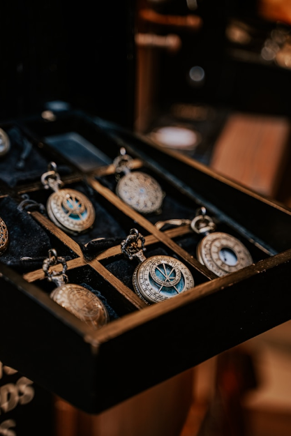

Linnakello Hämeenlinna -
Yli 70 vuotta kelloja ja kellojen huoltoja

Linnakello Hämeenlinna on Hämeenlinnan keskustassa sijaitseva kello-
ja kultasepänliike.
Me olemme perheyritys, jolla on takanaan jo 70
vuoden historia, joiden aikana meille on kertynyt runsaasti alan
osaamista ja pidämme itsemme ajan tasalla alan kehityksestä.
Ammattiosaamisemme mahdollistaa juuri oikeanlaisen tuotteen
suosittelemisen perinteiseen tai nykyaikaiseen makuun.
Linnakello Hämeenlinna sai alkunsa vuonna 1953, Hämeenlinnan
sydämessä, aivan kaupungin vilkkaan keskustan tuntumassa.
Perustaja, Erkki Linna, oli nuori, mutta
jo aikaisin kiinnostunut kelloteollisuudesta. Erkki oli oppinut
kellosepän taidot jo nuorena, auttaessaan isäänsä, joka oli
tunnettu paikallinen käsityöläinen.
Erkki rakasti ajatusta siitä,
miten kellojen tarkkuus ja kauneus yhdistyivät toisiinsa,
ne eivät olleet vain työkaluja, vaan pienoisteoksia,
jotka elivät mukana elämän joka hetkessä.